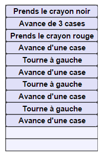

Vous disposez d'un robot capable de se déplacer et tracer des traits noirs ou rouges. Votre objectif est de programmer le robot pour qu'il dessine l'image ci-contre.
Le robot, représenté par le triangle vert, va répéter 4 fois de suite votre séquence d'instructions. Pour construire la séquence, faites glisser les instructions ci-dessous.
Choisissez les instructions |
Construisez votre séquence |
Résultat avec 4 répétitions |
|
| ||
|  |
On commence par repérer dans la figure un morceau de figure répété 4 fois, comme par exemple, le morceau numéroté (1) ci-dessous. Ensuite, on cherche la séquence d'instructions permettant de dessiner ce morceau de figure, sans oublier de s'assurer que le robot pointe dans la bonne direction à la fin pour pouvoir continuer les répétitions suivantes correctement. Chacune des 4 répétitions dessine ainsi un quart de la figure, et à la fin, on obtient le résultat souhaité. |
Cet exercice présente le concept de répétition, qui s'appelle en informatique le concept de « boucle ». Ici, la boucle consiste à répéter exactement 4 fois une séquence d'instructions. Cette boucle permet de réduire le nombre d'instructions que l'on doit fournir pour obtenir la figure, en exploitant les symétries de cette figure.
De manière plus générale, les boucles peuvent s'exécuter un nombre variable de fois. Par exemple, imaginons un programme qui contrôle des cloches qui sonnent l'heure. Ce programme va lire l'heure, puis répéter l'instruction « sonner le cloche » un nombre de fois égal au nombre d'heures écoulées depuis midi ou minuit.
Il existe également des boucles qui s'exécutent jusqu'à ce qu'une certaine condition soit réalisée. Par exemple, si un robot explore un labyrinthe, il va répéter l'action « avancer d'une case » jusqu'à ce que la condition « il y a un mur juste devant » devienne vraie. À ce moment là, le robot est obligé de tourner.
Enfin, il existe des boucles qui s'exécutent à l'infini, sans jamais s'arrêter. Par exemple, le programme qui gère un site web est basé sur une « boucle infinie », consistant à répéter l'opération : « si je reçois une requête me demandant le contenu d'une page, alors j'envoie le contenu de cette page ».